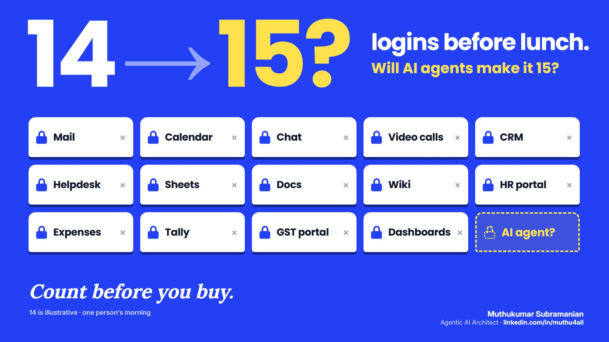
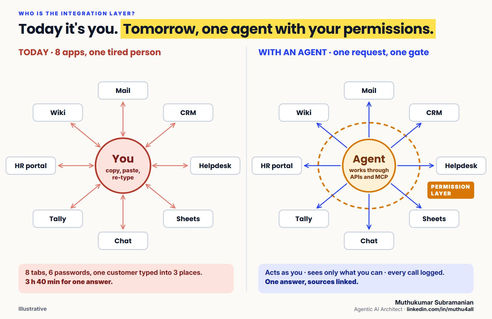
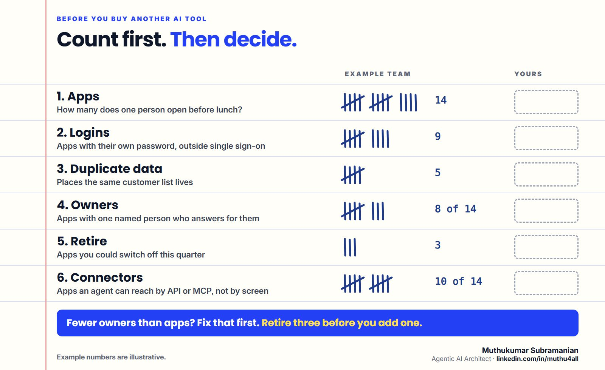
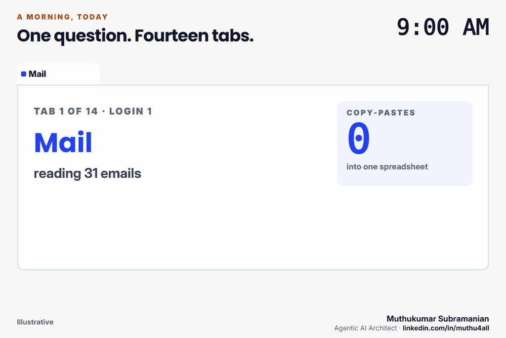

You Log Into 14 Apps Before Lunch. Will AI Agents Make It 15?
By Muthukumar Subramanian · Agentic AI Architect

9:05 AM, a freight forwarder in Chennai. Divya runs customer success. Her boss sends one line on chat: "Which of our top-20 customers have an open complaint and a renewal this month? Need it for the 2 PM review."
Simple question. Here's how she answered it.
Mail, to find the renewal list someone sent in October. The CRM, for the top 20. The helpdesk, for open complaints, which uses different customer names. A spreadsheet to put it all together. Tally, to check who's overdue. The contracts folder. Chat, three times, to ask who owns which account. Somewhere in there, the HR portal for a leave approval and the GST portal for a supplier query, because the morning doesn't stop for one question.
By 12:40 PM she had the answer. 14 apps, 9 separate logins, 52 copy-pastes, one spreadsheet nobody will open again. (Divya, the company and every number here are illustrative. You've probably lived a version of it.)
That afternoon, the company approved three new AI tools. One for meeting notes, one for sales emails, one for support replies. Each with its own login. Each with its own copy of the customer list.
We didn't fix app sprawl with AI. We gave it a new login.
The problem: you are the integration layer
Nobody designed Divya's job to be "the person who moves data between apps". It just happened, one tool at a time. Each app was a good decision on its own. Together they made her the glue.
The numbers are big, even allowing for who's being measured. Zylo's 2026 SaaS Management Index puts the average company's portfolio at 305 SaaS applications, with a median of 240. That's from Zylo's own customer base, mostly larger US firms, so read it as a direction, not an Indian average. I haven't seen a good number for Indian SMEs. My guess is fewer apps, more WhatsApp, and the same copy-paste.
The cost isn't only licences. It's attention. A 2022 Harvard Business Review study of employees at large companies found people switched between apps and websites nearly 1,200 times a day, and lost just under four hours a week getting their bearings back after each switch. About 9% of the working week.
And now every team is adding AI tools the same way they added apps: one at a time, each one sensible, together a mess.
The solution: one agent across the tools, one permission layer, fewer tools
This morning I wrote about AI agents that click through old screens like a person. That's the last resort. Tonight is the first resort: an agent that works through the apps' own APIs.

Three parts:
→ One agent, many tools. It reaches the CRM, the helpdesk, the sheet and the mail through APIs and MCP connectors. MCP, the Model Context Protocol, is the open standard Anthropic started in 2024 for connecting AI agents to tools; it's now under the Linux Foundation's Agentic AI Foundation. Microsoft Copilot Studio supports MCP. Google's Gemini Enterprise, the successor to Agentspace, connects to Workspace, Microsoft 365, Salesforce and SAP. The plumbing exists.
→ One permission layer. The agent acts as you. It sees only what you can see, starts read-only, and every call is logged. The identity industry is building for this: Okta's Cross App Access, for example, is a protocol for controlling how AI agents connect to apps. Whatever you use, the rule is the same. The agent never gets a master key.
→ Fewer tools, not more. Before you buy the 15th app, count the 14. Retire what overlaps. An agent across 9 well-owned apps beats an agent across 30 orphans.

Watch it work

What could go wrong
→ The agent is the 15th app. Be honest about it. It's only worth adding if three others go, or if it really takes the copy-paste off people.
→ It becomes a super-user. If you wire it up with an admin account "to make it work", it can see salaries, every customer and every contract. One leaked token and it's all exposed. Your permissions, not more, is the whole point.
→ Messy data stays messy. "Kaveri Foods", "Kaveri Foods Pvt Ltd" and "KAVERI FOODS (CHN)" are three customers to a computer. The agent will either miss one or guess. Ask it to show its sources and check the first few weeks by hand.
→ The tools you need most may have no connector. Many Indian business tools, and most government portals, have thin or no public APIs. Then you're back to screen-clicking agents, with all the care that needs.
→ Habits outlast tools. People will keep their 40 tabs for a while. That's fine. Start with one question a week that the agent answers better.
Two roles help. A forward deployed engineer (FDE), an engineer who works inside a customer's team on their real systems, sits with Divya's team for a week and writes down every copy-paste: from where, to where, why. That list is the agent's first job description. Then an AI Agent Manager, someone who owns an agent the way a manager owns a team, keeps its permissions tight and the app list short. The titles are still settling. The work isn't new; it just finally has a name.
The opportunity
→ For CIOs and IT heads: run the count before the next budget. Put "which tool does this replace?" on every AI purchase form.
→ For team leads: find your Divya. Ask her for the three questions that eat her mornings. Those are your first agent use cases, and they cost nothing to find.
→ For everyone who works in a browser: count your tabs before lunch tomorrow. If it's above ten, you're the integration layer. Say so in your next review.
→ For SaaS companies: ship an MCP server or a solid API. If an agent can't reach your product, your users will stop opening it.
→ For IT services firms and startups in India: build the connectors nobody else will. Tally, Zoho, the GST portal workflows, regional ERPs. Then sell FDE-led rollouts to SMEs: one week of counting, one agent, three apps retired.
Your turn 👇
One agent that works across all your apps, or a separate AI inside each app? Pick one.
Tag the colleague who has 40 tabs open right now.